在一座城市里，
和同频的人见面。
北京敏捷之旅社区，致力于在北京地区推广敏捷的实践经验，传播敏捷实践方法；建立敏捷学习圈子，让敏捷爱好者彼此建立联接。
线上与线下，
都在北京发生。
今年的活动一半面向屏幕，一半回到现场。你可以从任何一个入口加入北京敏捷社区。
正在发生的
北京敏捷现场。
从 Agentic AI 到个人成长，从线上对谈到线下共创。2026 年，我们继续在北京见面。
挑战 5 分钟，用 IMA 知识库复刻你的“爆文生产线”
讲师：Mary 海的女儿。后端交付成熟但缺少前端流量的“实干家”，一起用 AI 知识库产出高质量内容。
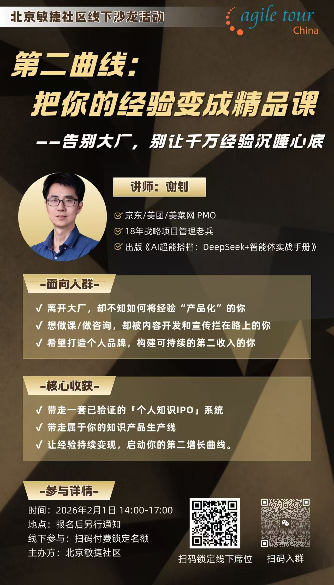
第二曲线：把你的经验变成精品课
讲师：谢刃。带走一套经过验证的“个人知识 IPO”系统，让经验持续变现。
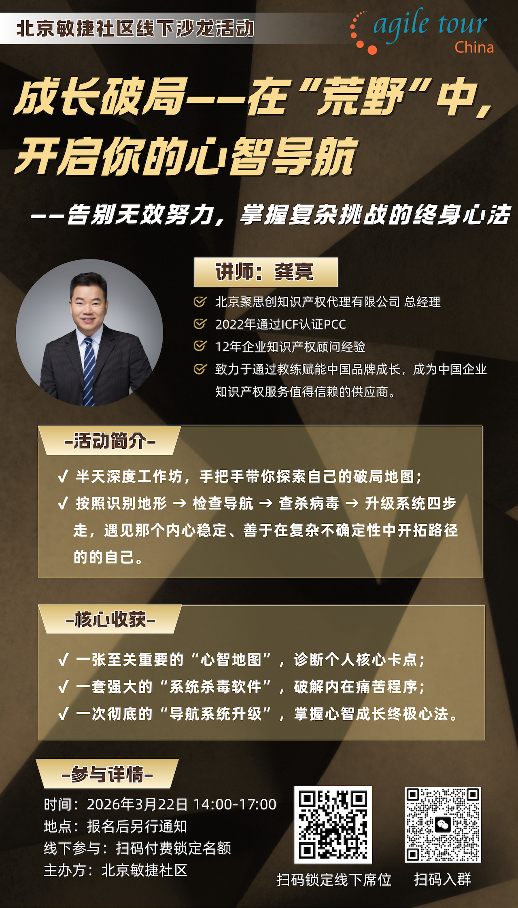
成长破局：在“荒野”中开启你的心智导航
讲师：龚亮。用一张“心智地图”、一套“系统杀毒软件”，掌握心智成长终极心法。
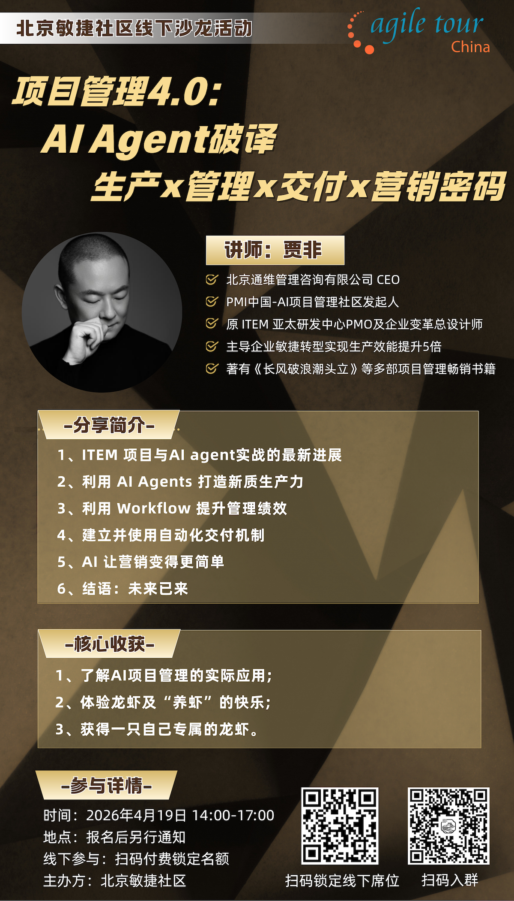
项目管理 4.0：AI Agent 破译生产 × 管理 × 交付 × 营销密码
讲师：贾非。探索 AI Agent 如何打造新质生产力、提升管理绩效并建立自动化交付机制。
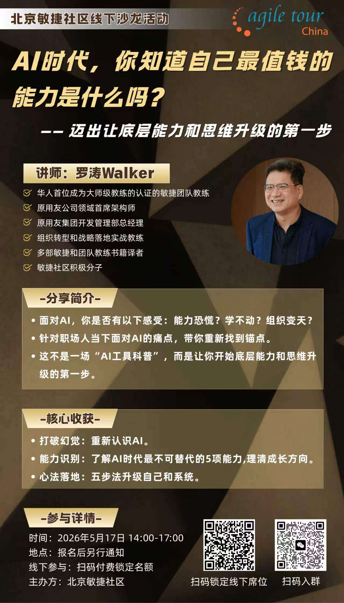
AI 时代，你知道自己最值钱的能力是什么吗？
讲师：罗涛 Walker。重新找到职场锚点，开始底层能力和思维升级的第一步。
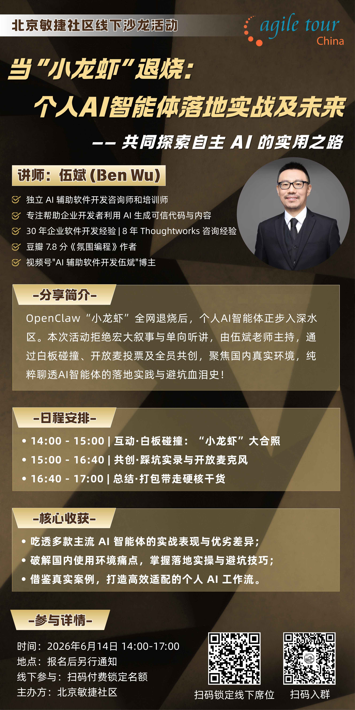
当“小龙虾”退烧：个人 AI 智能体落地实战及未来
讲师：伍斌（Ben Wu）。聚焦真实环境中的 AI 智能体落地实践、避坑经验与个人 AI 工作流。
从碳基协作到硅基自治：Agentic Agile 3-4-3 研发治理体系解析
讲师：王立杰。解析 3 个超级角色、4 个动态工件与 3 大运行机制，说明企业如何安全落地。
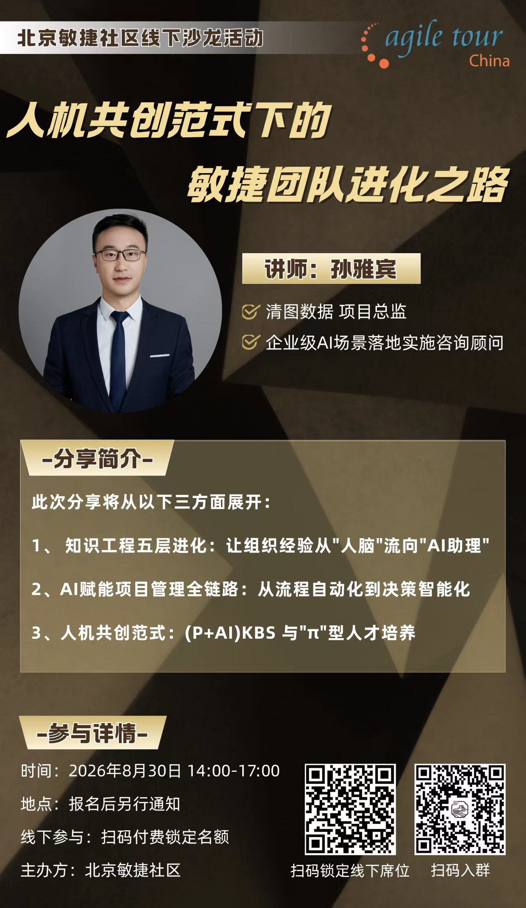
人机共创范式下的敏捷团队进化之路
讲师：孙雅宾。探索知识工程五层进化、AI 赋能项目管理全链路与“π”型人才培养。
AI × 数字化产品设计：智能工具如何赋能产品设计
讲师：王伟。面向产品从业者，探索用户画像、旅程地图构建与智能协作。
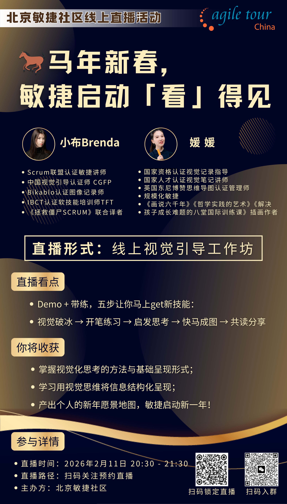
马年新春，敏捷启动「睿」得见
讲师：小布 Brenda、媛媛。用视觉引导工作坊开启新年，完成个人新年愿景地图。
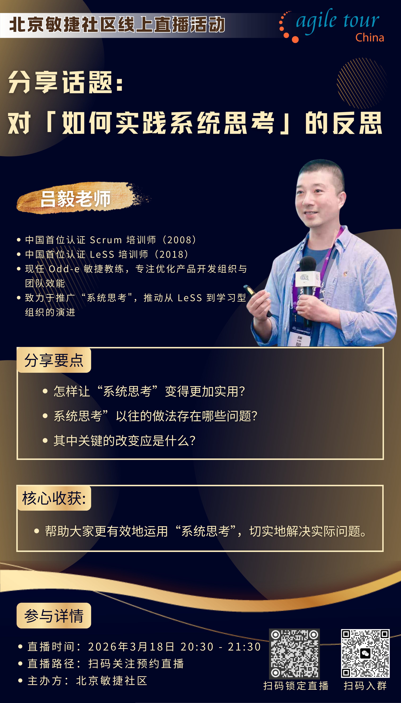
分享话题：对“如何实践系统思考”的反思
分享者：吕毅老师。讨论如何让系统思考更实用，以及关键的改变应该是什么。
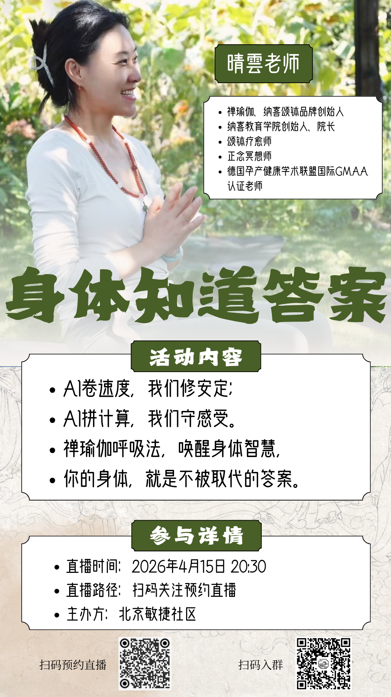
身体觉察专家：AI 卷速度，我们修安定
分享者：晴云老师。通过 AI 卷速度、AI 讲计算与禅瑜伽呼吸法，唤醒身体智慧。
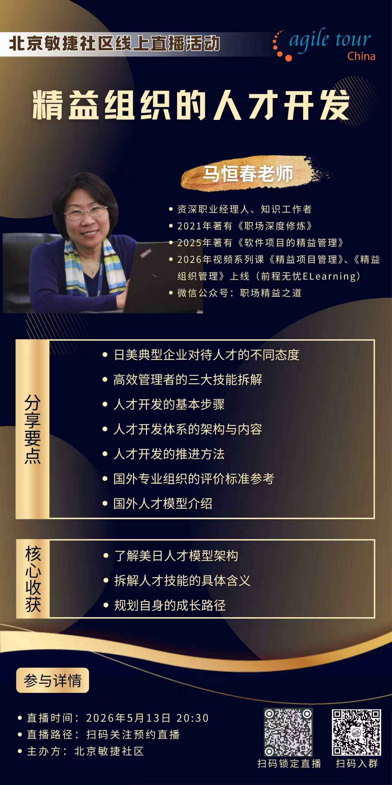
精益组织的人才开发
分享者：马恒春老师。拆解高效管理者的技能、人才开发体系与个人成长路径。
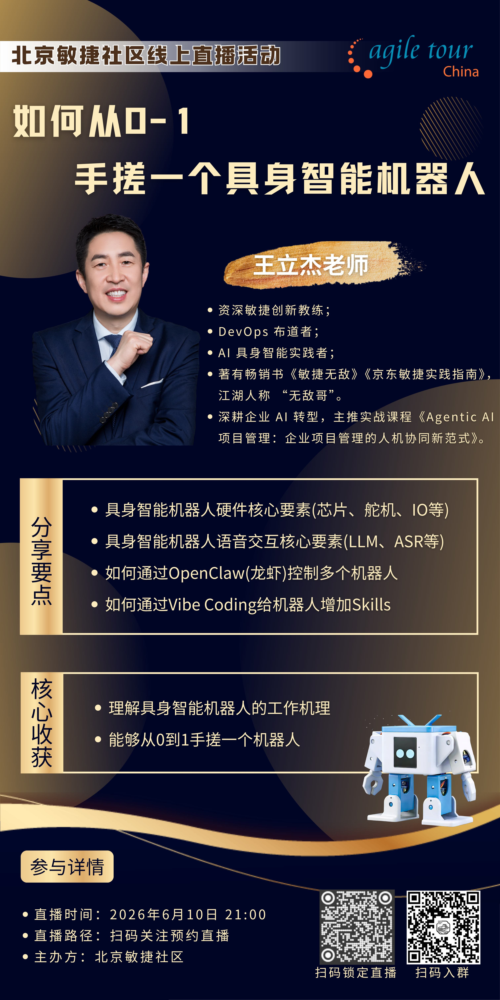
如何从 0-1 手搓一个具身智能机器人
讲师：王立杰。理解具身智能机器人的硬件、语言交互与工作机理。
Agentic AI：打造自主执行的 AI 办公工作流
讲师：卫佳磨。理解 Agentic AI 的核心逻辑，把 AI 转化为可执行的工作流。
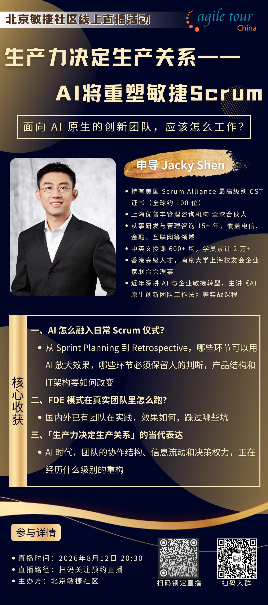
生产力决定生产关系：AI 将重塑敏捷 Scrum
分享者：申导 Jacky Shen。讨论 AI 如何融入日常 Scrum 仪式，以及团队协作结构的重构。
成为超级个体，先做自己的 FDE
分享者：林伟丹（Wand）。把 AI 部署进人生现场，围绕看穿、听懂、做出、催化与迭代展开。
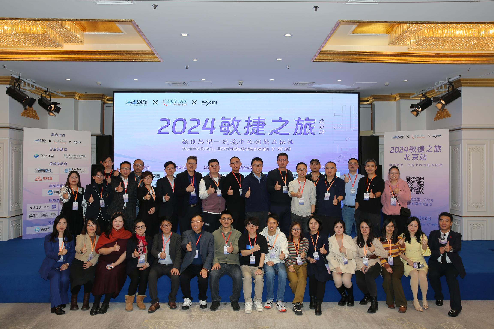